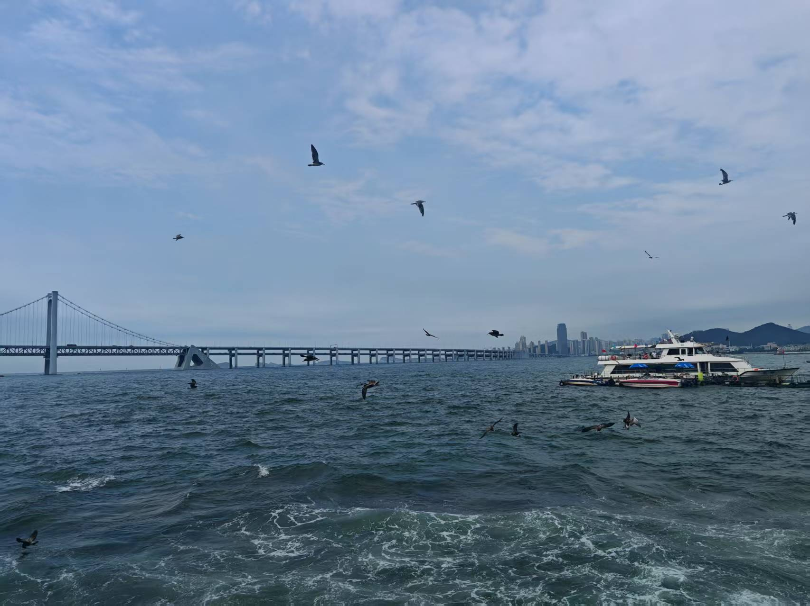
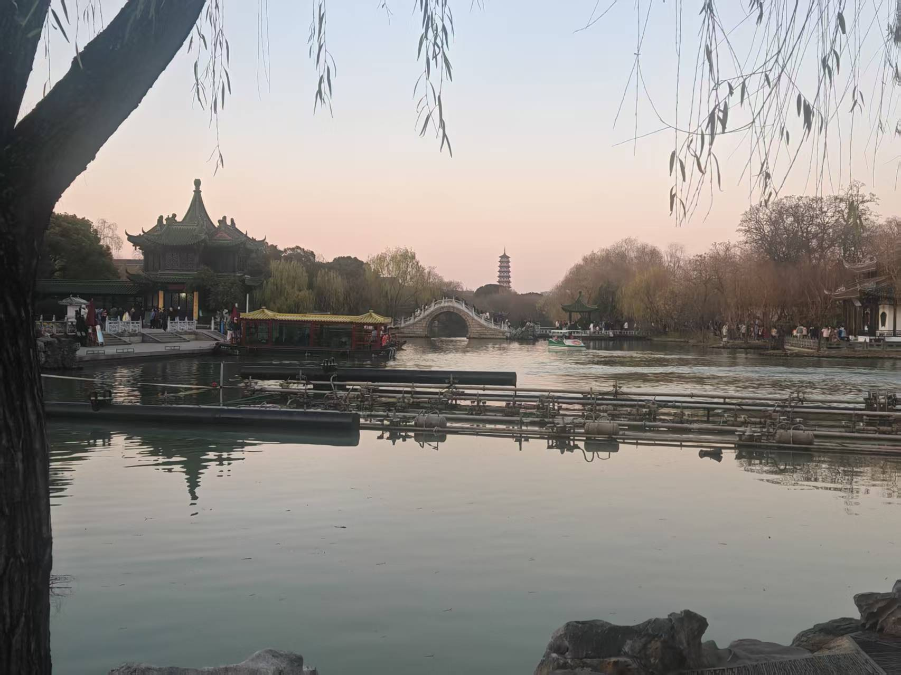
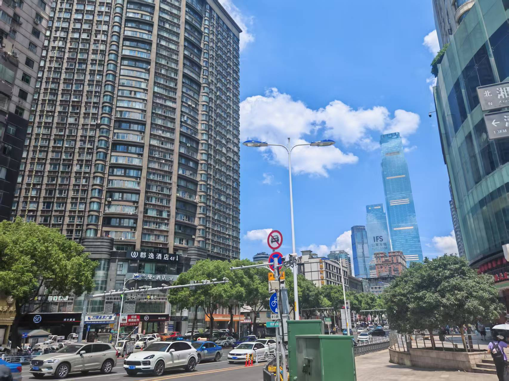

← 返回兴趣爱好
旅行足迹
安徽是我的家乡，上海是我的大学所在地，以下是从这两个据点出发踏过的地方。
已去过（15 城）
想去（4 处）
✓ 已经去过
已打卡
北京
第一次去首都，天安门广场的宏大、故宫的沉静与胡同里的烟火气，构成了一种奇妙的混合。北京的厚重感是别的城市给不了的。

已打卡
大连
海风、海鲜、还有意外好看的欧式建筑街区。夏天的大连有一种格外松弛的感觉，适合放空。
已打卡
济南
趵突泉的泉水清澈到令人惊叹，泉城的名号名副其实。老街的气质安静而不张扬。
已打卡
郑州
中原腹地，热干面和烩面让人印象深刻。郑州的节奏比想象中快，是一座很有生命力的城市。
已打卡
南京
历史与现代交叠得恰到好处。中山陵的梧桐道、夫子庙的灯影、还有秦淮河畔的夜晚，每一处都带着故事。

已打卡
扬州
慢节奏的城市，早茶文化让人流连。瘦西湖的烟雨朦胧，和诗句里那个扬州意象，某种程度上是呼应的。
已打卡
镇江
金山寺的传说从小便熟悉，站在寺前的感觉比想象中更有震撼感。锅盖面也是意外之喜。
已打卡
常州
恐龙园是童年记忆的一部分，长大再去仍然热闹非凡。这座城市藏着很多低调的惊喜。
已打卡
无锡
太湖边的风景让人放松，蠡园的荷花是夏天独有的美。无锡排骨面一定要打卡。
已打卡
苏州
园林、评弹、粉墙黛瓦——苏州是我见过最接近"诗意"这个词的城市。拙政园值得反复来。
已打卡
湖州
太湖南岸的安静小城，南浔古镇的水乡气质格外迷人，节奏慢得让人不想走。
已打卡
杭州
西湖的美在于四季皆宜，断桥残雪也好，夏日荷风也好。灵隐寺的晨钟让人心静。

已打卡
长沙
文和友、茶颜悦色、臭豆腐——长沙是一座让人很快爱上的城市。橘子洲头的毛主席像壮观而震撼。
已打卡
福州
三坊七巷的青石板路走起来特别踏实，烟台山的老洋楼有种异域风情。鱼丸汤是记忆里最鲜的那一口。
已打卡
厦门
鼓浪屿的文艺气息和南普陀寺的禅意形成有趣的对比。环岛路的海风，是那次旅行最好的背景音。
✦ 还想去的地方
心愿清单
香港
霓虹灯与维多利亚港的夜景、叮叮车和大排档——香港是中西文化碰撞最鲜活的地方，很想亲眼看看。
心愿清单
广州
早茶文化是我无法抗拒的理由，虾饺、肠粉、叉烧……粤式饮食是一种生活态度，值得专程去体验一次。
心愿清单
云南大理
洱海的蓝、苍山的白雪、古城的慢时光——大理是那种适合住上一周什么都不做的地方，心里一直惦记着。
心愿清单
内蒙古
没有边际的草原、星空、策马——想象中的内蒙古辽阔得令人心跳加速。有一天一定要去看看真正的"天苍苍，野茫茫"。